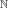

OrthogonalBasis¶
- class OrthogonalBasis(*args)¶
Orthogonal basis.
Notes
OrthogonalBasis is the interface class of the OrthogonalFunctionFactory implementation, which is an
OrthogonalProductPolynomialFactoryin the particular case of polynomial chaos expansion.Examples
>>> import openturns as ot >>> # Create an orthogonal basis >>> polynomialCollection = [ot.LegendreFactory(), ot.LaguerreFactory(), ot.HermiteFactory()] >>> productBasis = ot.OrthogonalBasis(ot.OrthogonalProductPolynomialFactory(polynomialCollection))
Methods
build(*args)Get the term of the basis collection at a given index or multi-indices.
Accessor to the object's name.
Return the enumerate function.
getId()Accessor to the object's id.
Accessor to the underlying implementation.
Get the measure upon which the basis is orthogonal.
getName()Accessor to the object's name.
setName(name)Accessor to the object's name.
- __init__(*args)¶
- build(*args)¶
Get the term of the basis collection at a given index or multi-indices.
- Parameters
- indexint
Indicates the term of the basis which must be constructed. In other words, index is used by a bijection from  to
 (with
(with  the dimension of the basis). The bijection is detailed in
the dimension of the basis). The bijection is detailed in
EnumerateFunction.- indicessequence of int
Indicates the term of the basis which must be constructed. In other words, indices is used by a bijection from
to
(with the dimension of the basis). The bijection is the inverse of
EnumerateFunction.
- Returns
- function
Function The term of the basis collection at the index index or the inverse of indices.
- function
Examples
>>> import openturns as ot >>> # Create an orthogonal basis >>> polynomialCollection = [ot.LegendreFactory(), ot.LaguerreFactory(), ot.HermiteFactory()] >>> productBasis = ot.OrthogonalBasis(ot.OrthogonalProductPolynomialFactory(polynomialCollection)) >>> termBasis = productBasis.build(4) >>> print(termBasis.getEvaluation()) -1.11803 + 3.3541 * x0^2 >>> termBasis = productBasis.build(5) >>> print(termBasis.getEvaluation()) (1.73205 * x0) * (-1 + x1) >>> termBasis2 = productBasis.build([1,1,0]) >>> print(termBasis2.getEvaluation()) (1.73205 * x0) * (-1 + x1)
- getClassName()¶
Accessor to the object’s name.
- Returns
- class_namestr
The object class name (object.__class__.__name__).
- getEnumerateFunction()¶
Return the enumerate function.
- Returns
- enumerateFunction
EnumerateFunction Enumerate function that translates unidimensional indices into multidimensional indices.
- enumerateFunction
- getId()¶
Accessor to the object’s id.
- Returns
- idint
Internal unique identifier.
- getImplementation()¶
Accessor to the underlying implementation.
- Returns
- implImplementation
A copy of the underlying implementation object.
- getMeasure()¶
Get the measure upon which the basis is orthogonal.
- Returns
- measure
Distribution Measure upon which the basis is orthogonal.
- measure
Examples
>>> import openturns as ot >>> # Create an orthogonal basis >>> polynomialCollection = [ot.LegendreFactory(), ot.LaguerreFactory(), ot.HermiteFactory()] >>> productBasis = ot.OrthogonalBasis(ot.OrthogonalProductPolynomialFactory(polynomialCollection)) >>> measure = productBasis.getMeasure() >>> print(measure.getMarginal(0)) Uniform(a = -1, b = 1) >>> print(measure.getMarginal(1)) Gamma(k = 1, lambda = 1, gamma = 0) >>> print(measure.getMarginal(2)) Normal(mu = 0, sigma = 1)
- getName()¶
Accessor to the object’s name.
- Returns
- namestr
The name of the object.
- setName(name)¶
Accessor to the object’s name.
- Parameters
- namestr
The name of the object.